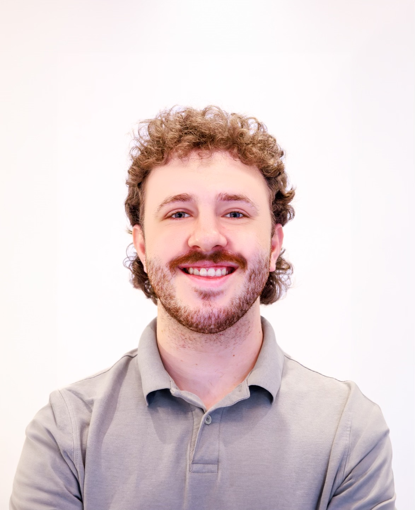

Reid Nyenhuis
I am a 4th year student at Toronto Metropolitan University, in the RTA Sport Media program. I am a dedicated student and media professional with both Multi-camera and Single-camera production experience. Some of my key experiences include my work with CBC on the 2024 Paris Summer Olympics, and my documentary experience on both "Nobody Cares, Work Harder" and "Shiftmaker".I am originally from Ottawa, and currently live in Toronto for school. One of my favourite hobbies is music, both playing piano and guitar, listening to music, and collecting vinyl records. My full resume can be seen below.
